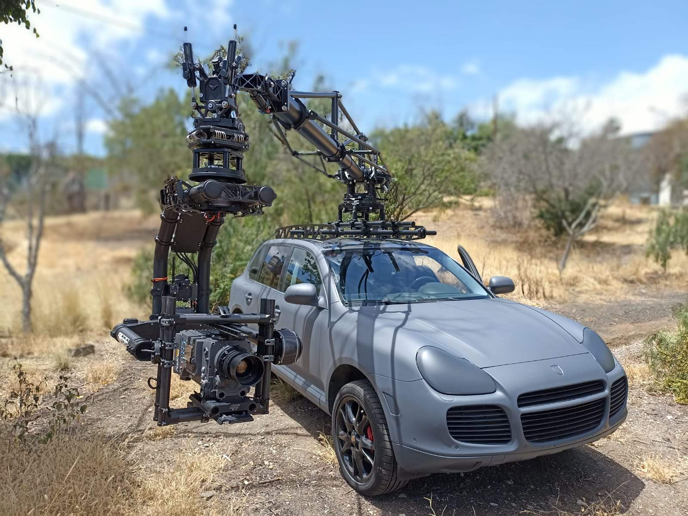

CAMERA CAR · 01
Porsche Cayenne + Motocrane Radical
Una solución orientada a tomas móviles desde vehículo, combinando plataforma de camera car con brazo de cámara para variar la posición durante el desplazamiento.
- VehículoPorsche Cayenne
- GrúaMotocrane Radical
- Cabezas disponiblesMovi XL y Ronin 2
- ConfiguraciónA confirmar según cámara y rodaje